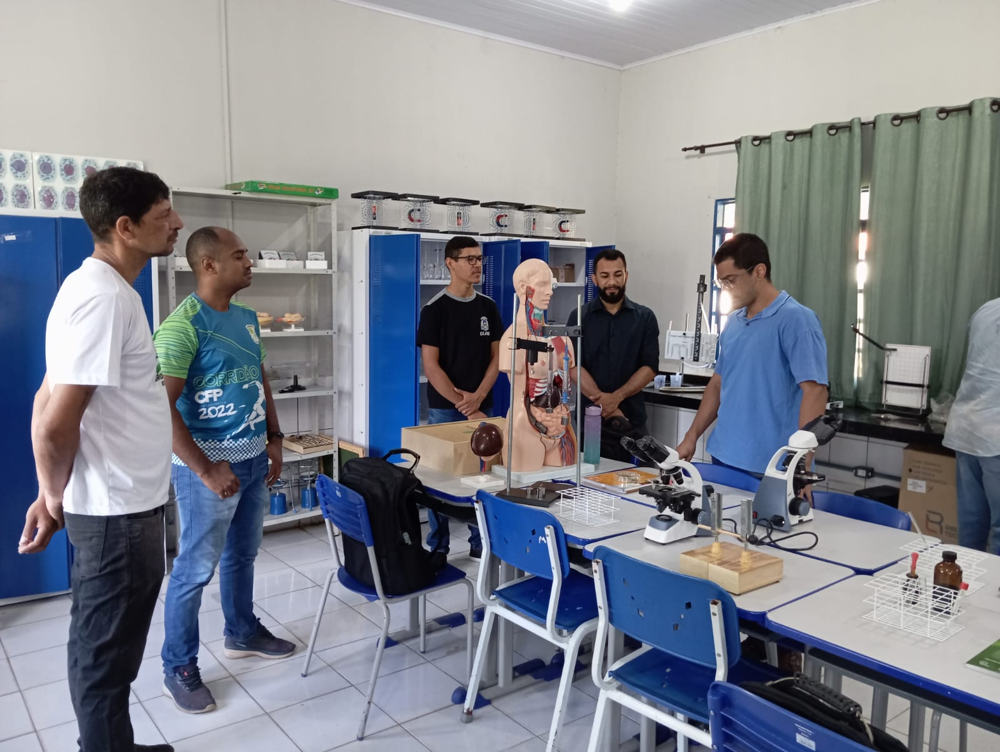
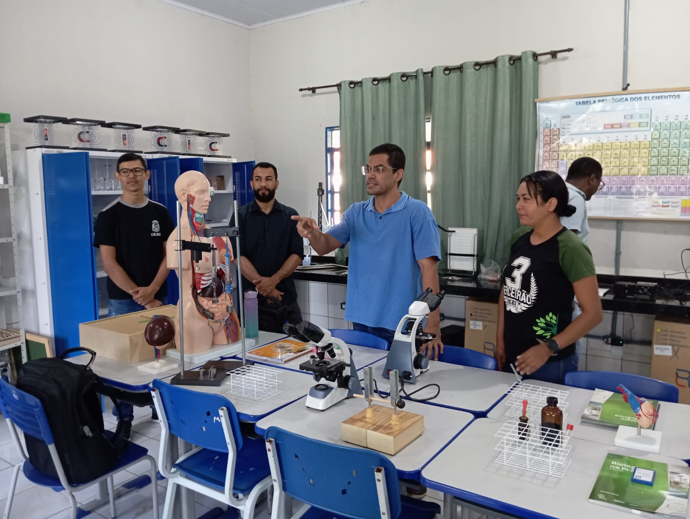
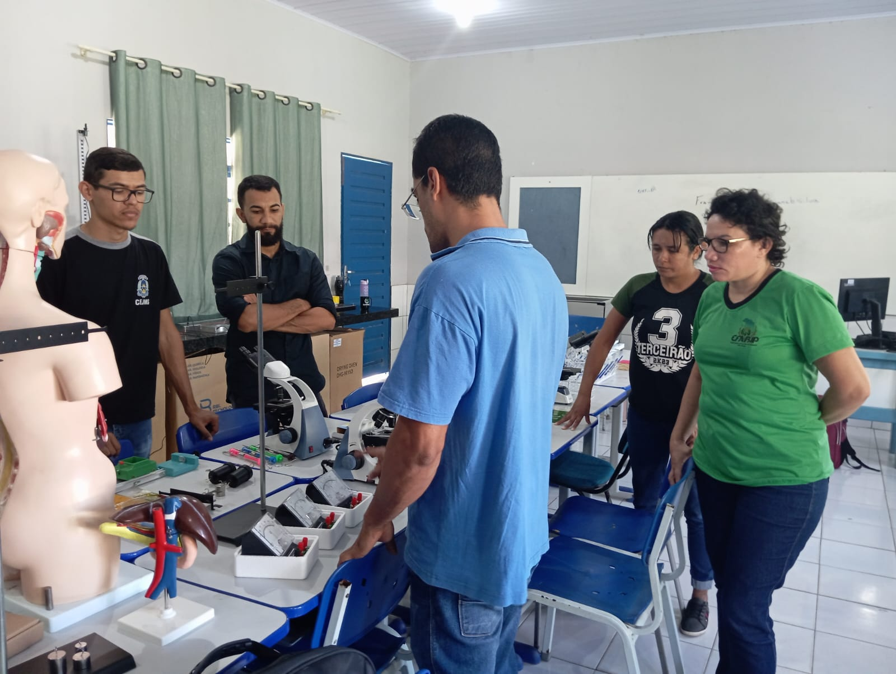

Registros da Formação
Data de publicação: 29 de maio de 2024
Bem-vindos ao nosso blog! Aqui estão algumas das atividades recentes da nossa escola. Formação dos professores das escolas EFABIP e Joaquina Maria, juntamente com o fisico Pablo Henrique professor da Ulisses Guimarães, com a participação dos professores da EFABIP e Joaquina Maria, formação para o uso do laboratório de Física.
Galeria de Imagens


